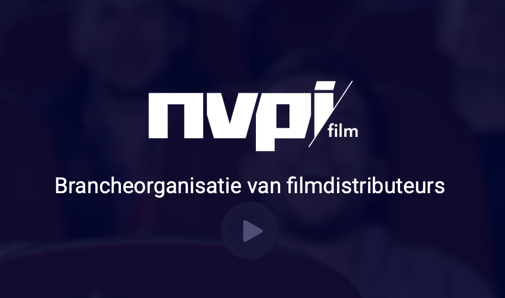
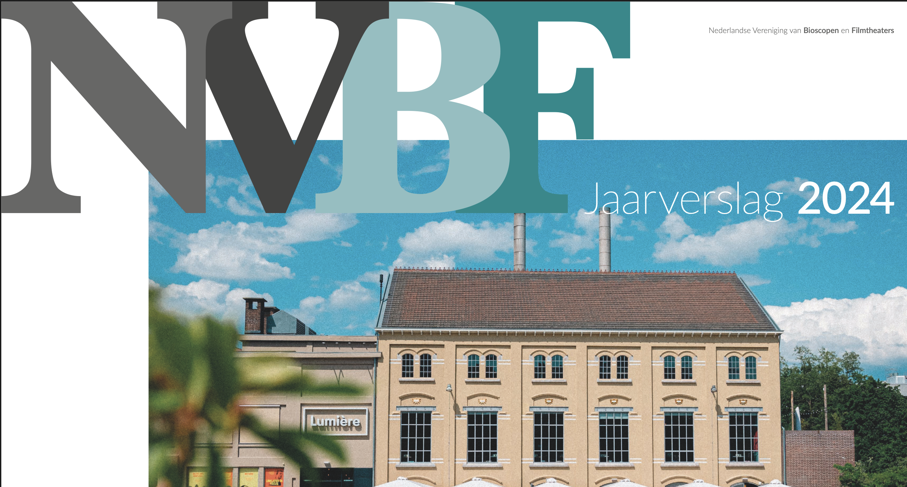
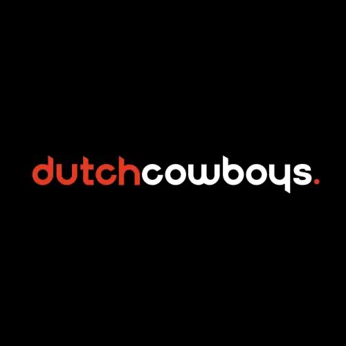
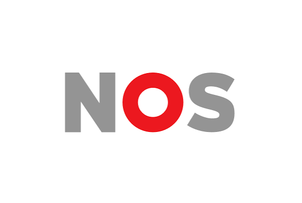
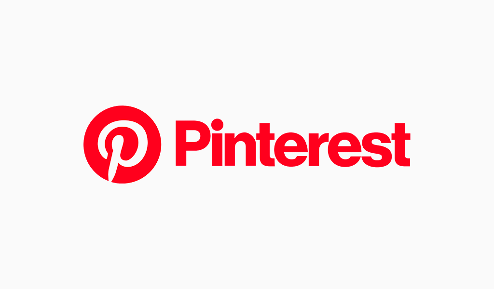

NVPI Bezoek en Box office
Bezoeker per film per jaar.
NVBF Jaarverslag
Jaarverslag over bezoekersaantallen bij de bioscoop.


dutchcowboys
dit is een pagina die negatieve aspecten van naar de bioscoop uitlegt.
NOS item
bioscoop bezoek terug gelopen in 2025.


Gebruikt voor inspiratie opdoen bij het designen.